Cartas del Tarot
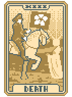
La Muerte
Sustituye la carta de la izquierda por el valor y palo de la carta de la derecha.

Sentencia
Crea una comodin aleatorio.
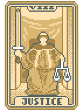
Justicia
Transforma una tarjeta seleccionada en una tarjeta de cristal.
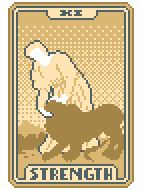
Fuerza
Aumenta el rango de hasta 2 cartas seleccionadas en 1.
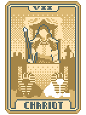
El Carro
Mejora 1 carta seleccionada convirtiéndola en una carta de acero.

El Diablo
Mejora 1 carta seleccionada convirtiéndola en una carta de piedra.
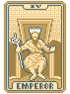
El Emperador
Crea hasta 2 cartas de Tarot aleatorias (Tiene que haber espacio disponible).

La Emperatriz
Mejora 2 cartas seleccionadas a Cartas Múltiples.
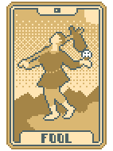
La Emperatriz
Copia la última carta de Tarot/Planeta usada. No incluye El Loco.

El Ahorcado
Destruye hasta 2 cartas seleccionadas.
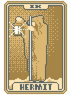
El Ermitaño
Duplica el dinero (Máximo $20)

El Hierofante
Mejora 2 cartas seleccionadas a cartas de bonificación.
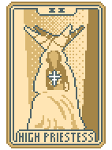
La Suma Sacerdotisa
Mejora 2 cartas seleccionadas a Cartas Múltiples
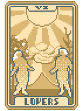
Los amantes
Mejora una carta seleccionada convirtiéndola en una carta versátil.
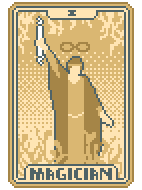
El Mago
Mejora 2 cartas seleccionadas a Cartas de la Suerte

La Luna
Convierte hasta 3 cartas seleccionadas en Tréboles.
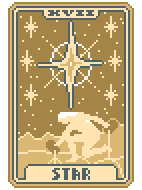
La Estrella
Convierte hasta 3 cartas seleccionadas en Diamantes.

La Torre
Mejora 1 carta seleccionada convirtiéndola en una carta de piedra.

La Rueda de la Fortuna
Hay una probabilidad de 1 entre 4 de añadir una edición Foil , Holográfica o Policromada a un Joker aleatorio.

El Mundo
Convierte hasta 3 cartas seleccionadas en Picas.

La templanza
Otorga el valor de venta acumulado de tus Jokers, con un tope de $50.
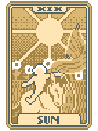
El Sol
Convierte hasta 3 cartas seleccionadas en corazones.